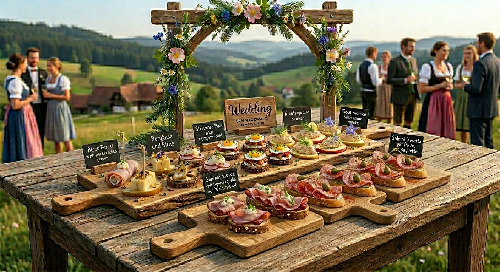
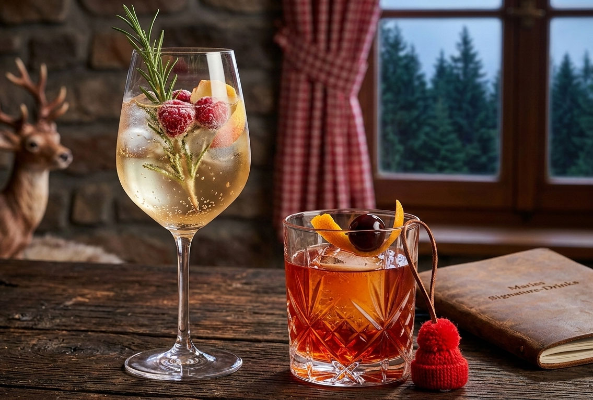

Tradition trifft KI-Küche
Marie interpretiert ihre Heimat neu – nicht nur im Sound, sondern auch auf dem Teller. Entdecke das Schwarzwald-Sushi und unsere Schwarzwald-Tapas: Eine innovative Fusion aus japanischer Präzision, spanischer Geselligkeit und herzhafter Schwarzwälder Vesper-Kultur. Ob als gerollte Köstlichkeit oder elegante Fingerfood-Häppchen auf verschiedenen Brotsorten – hier werden traditionelle Klassiker zu einem modernen kulinarischen Erlebnis.
Maries Schwarzwald-Sushi
Die genauen Mengen (3-4 Pers.)
- 250g Sushireis
- 3 EL Apfelessig & 1 TL Waldhonig
- 100g Schwarzwälder Schinken (hauchdünn)
- 80g Wildschweinschinken oder Forelle
- 100g Frischkäse & 2 TL Meerrettich
- 1 Bund Schnittlauch, 1 Apfel
Einkaufsliste
- Sushireis & Nori-Blätter
- Schwarzwälder Schinken
- Wildschweinschinken / Forelle
- Frischkäse & Sahnemeerrettich
- Preiselbeeren (Glas)
- Apfelessig & Waldhonig
- Dunkles Bier (z.B. Schwarzbier)
- Frischer Schnittlauch & Apfel
Zubereitung
- Der Reis: Koche den Sushireis und mariniere ihn mit der Mischung aus Apfelessig, Waldhonig und Salz. Abkühlen lassen.
- Die Rollen: Bestreiche ein Nori-Blatt mit der Meerrettich-Frischkäse-Creme. Belege es mit Schinken oder Forelle und feinen Apfelstiften.
- Das Finish: Rolle das Sushi fest ein und wälze die Außenseite in gehacktem Schnittlauch.
- Nigiri-Style: Forme kleine Reisbällchen, belege sie mit Schinken und einem Klecks Preiselbeeren.
Der Kick: Lass das dunkle Bier in einem Topf zu einem dicken Sirup einkochen. Serviere diese "Wald-Sojasauce" zum Dippen!
Schwarzwälder-Tapas
Traditionelle Vesper-Klassiker neu interpretiert als elegante Fingerfood-Häppchen auf verschiedenen Brotsorten.

Tipp: Serviere die Tapas auf Schieferplatten in strengen Reihen für einen professionellen Look.
Die Variationen
- Mini Strammer Max: Wachtelei & Speck auf Pumpernickel
- Schinken-Happen: Meerrettich-Creme auf Baguette
- Forellen-Mousse: Apfel & Dill auf Körnerbrot
- Bergkäse-Konfekt: Birne & Honig auf Walnussbrot
- Wald-Tapa: Kräuterseitlinge auf Walnussbrot
- Quark-Happen: Radieschen-Fächer auf Körnerbaguette
Die Brot-Basis
- Pumpernickel (rund)
- Klassisches Baguette
- Körnerbaguette
- Walnussbrot
Frische-Check
- Wachteleier & Speck
- Forellenfilets & Schmand
- Bergkäse & Kräuterseitlinge
- Birnen, Äpfel & Radieschen
Zubereitungs-Highlights
- Der Stramme Max: Brate die Wachteleier als Mini-Spiegeleier (Dotter flüssig!) und setze sie mit krossem Speck auf gebutterten Pumpernickel.
- Die Schinkenrollen: Bestreiche den Schinken mit Meerrettich-Frischkäse, rolle ihn eng und schneide ihn nach 30 Min. Kühlung in 2cm Stücke.
- Das Wald-Tapa: Brate Kräuterseitlinge mit Knoblauch, Thymian und Rosmarin goldbraun an und staple sie auf Walnussbrot.
- Das Finish: Garniere die vegetarischen Käse-Happen mit einem Tropfen Waldhonig und einem frischen Thymianzweig.
Maries Profi-Tipp: Beschrifte die Tapas-Reihen mit kleinen Kärtchen auf Holzspießen. Das sieht nicht nur toll aus, sondern hilft Gästen mit Allergien oder Vorlieben sofort bei der Auswahl!
Maries Getränke-Begleitung
Was trinkt man zur Schwarzwald-Fusion? Hier sind Maries Empfehlungen für den perfekten Abend:
Für das Sushi & den Sirup
- Dunkles Bier: Zum Einkochen als "Wald-Sojasauce"
- Grauburgunder: Passt perfekt zum Forellen-Mousse
Für die Tapas
- Badischer Winzersekt: Der ideale Aperitif
- Naturtrüber Apfelsaft: Mit Sprudel für die alkoholfreie Note
Maries Signature-Drinks

Servier-Vorschlag: Mit frischen Waldkräutern und Beeren dekorieren.
Schwarzwald-Spritz
- 4 cl Fichtennadel-Sirup
- 10 cl Winzersekt & Schuss Mineralwasser
- Deko: Rosmarin & Himbeeren
Bollenhut-Negroni
- 3 cl Schwarzwald Gin
- 3 cl Roter Wermut & 3 cl Campari
- Marie-Special: 1 Spritzer Kirschwasser
- Auf Eis rühren
Zubereitungstipp: Für den Spritz den Sirup zuerst ins Glas geben, mit Sekt und Wasser aufgießen und den Rosmarinzweig kurz im Glas "anklopfen", damit er sein Aroma freigibt.